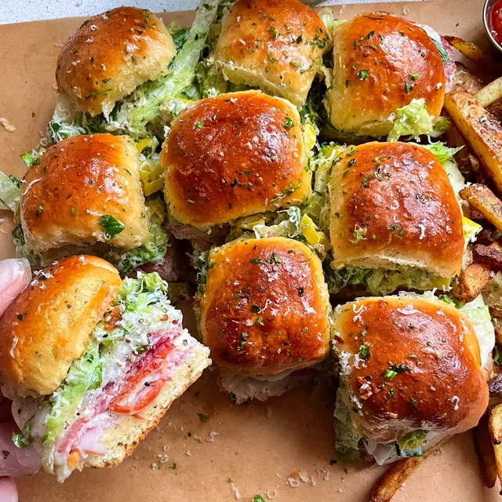

Italian Grinder Sliders

Italian Sliders for your next Football Watchparty!
Ingredients
For the sliders
- 12 Hawaiian rolls
- 8 oz ham, thinly sliced
- 4 oz provolone cheese, sliced
- 3 oz thinly sliced pepperoni
- 3 oz thinly sliced salami
For the glaze
- 2 tbsp butter
- 2 tbsp grated parmesan
- 1/2 teaspoon garlic powder
- 1/4 teaspoon salt
Grinder Salad topping
- 8 oz shredded lettuce
- 1/2 cup diced tomato
- 1/2 cup sliced pepperoncini peppers
- 1/4 cup mayo
- 1 tbsp red wine vinegar
- 1 tsp italian seasoning
- 1/2 tsp salt
- 1/2 tsp pepper
- 1/2 tsp garlic powder
Instructions
- Preheat the oven to 350°F.
- Cut the Hawaiian rolls horizontally. Lay the bottoms in a baking dish.
- Layer the provolone cheese on the bread. Then add the ham, pepperoni, and salami on top.
Place the tops back on the rolls and cut through the sandwiches between each roll.
- Combine the butter, parmesan, garlic powder, and salt. Spread over the tops of the slider sandwiches.
Bake for 15-20 min or until the cheese is melted and the tops are golden brown.
- While the sandwiches bake, make the grinder salad by whisking together the mayo, red whine vinegar,
italian seasoning, salt, pepper, and garlic powder to form a dressing.
- Once the sandwiches are done, remove the tops, add the grinder salad and put the tops back on.
Serve immediately.
Home